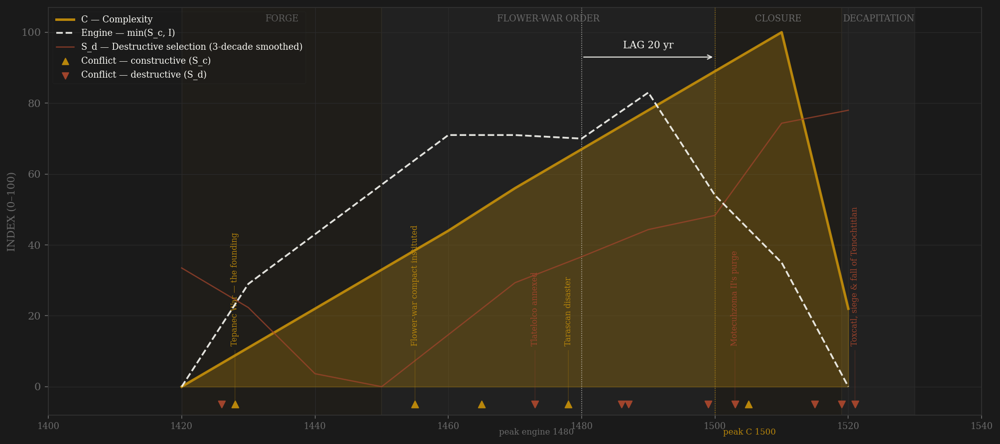
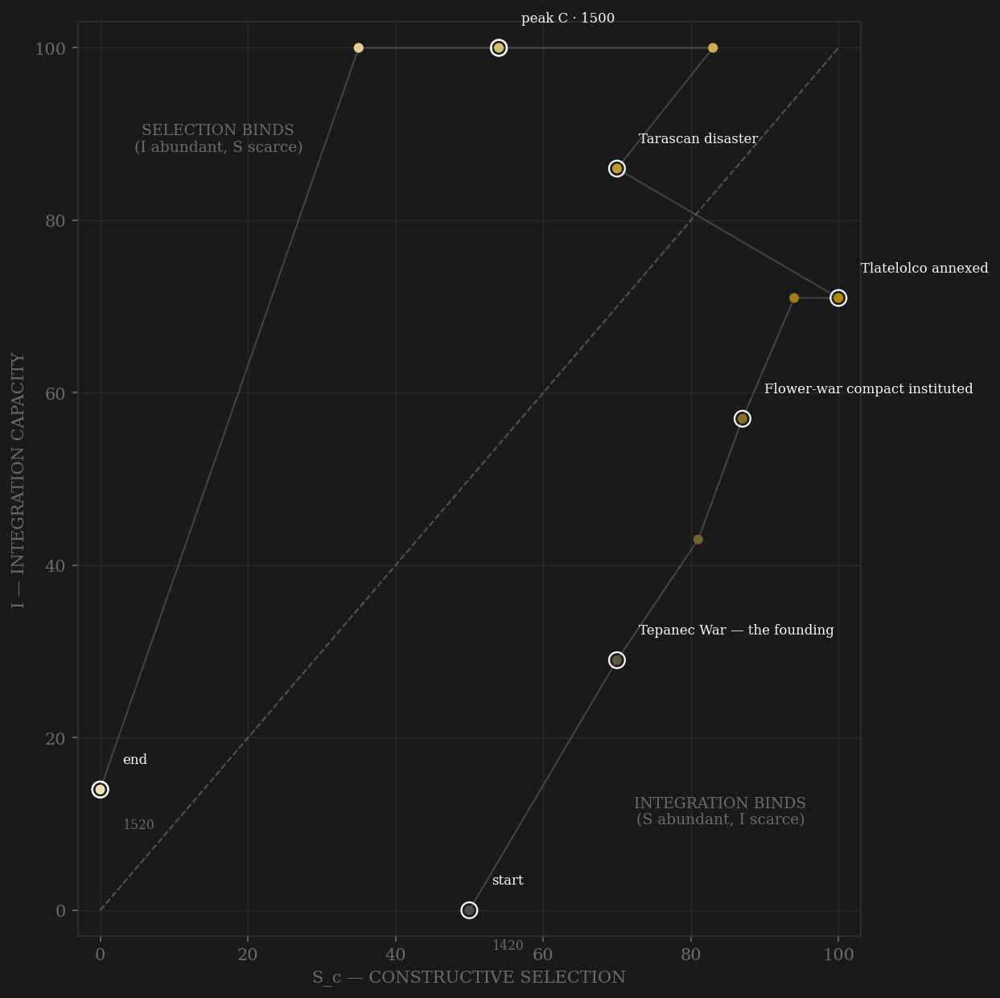

The Triple Alliance is one of two polities in the sample that never touched Eurasia — no shared writing, no shared plagues, no shared ideas — which makes it a fully independent test of the framework, and it behaves like the Old World cases anyway. The selection engine here is unusually literal: rank ascent by verified capture count, the promotion ladder drawn grade by grade in Codex Mendoza f.64r, eagle and jaguar ranks open to commoners, quauhpilli 'eagle nobles' ennobled by battlefield merit beside the hereditary pipiltin. The state even institutionalized its own external pressure — the flower wars against Tlaxcala, scheduled peer contests maintained in part to keep the ladder under load, an arrangement unique in the roster. The v2 engine peaks in the 1480s–90s: Ahuitzotl's ladder at high noon, promotion by demonstrated valor, crossed with an integration machine at maximum — the tribute rolls behind Codex Mendoza's 38 provinces, the pochteca network reaching Guatemala, the causeway-canal-market complex the conquistadors would compare to Venice and Constantinople. Complexity answers at +20 years, inside the window under both smoothed and unsmoothed protocols. Then the showcase: Motecuhzoma II, elected 1502, purges Ahuitzotl's commoner-born officials — Durán has them killed, not just dismissed — bars the quauhpilli from palace service, and restricts office to hereditary nobility. Textbook channel-A closure, dated to the decade, and the constructive-selection line falls off a cliff while C is still rising. The terminal rows are exogenous decapitation, Babylon's precedent: the framework predicts nothing about smallpox and steel, and the rows are exclude-flagged — but note what they show anyway: a city at peak complexity, right-censored, and a council that properly elected two more emperors under siege. The machinery worked to the end. It was beheaded, not exhausted — though the ladder that would have generated its next generation of commanders had been closed for seventeen years, and the enemy enclave the flower wars deliberately preserved marched on Tenochtitlan with Cortés.

The trajectory climbs both axes almost in lockstep for six decades — a polity building its selection ladder and its tribute machine as one system, which is what the founding reforms literally did (land and titles by war service, alliance logistics as the reward loop). The Tarascan disaster of 1478–79 barely dents the path: the check was absorbed at the frontier, the machinery untouched. The turn comes at 1500–1510, and it is the most vertical channel-A collapse in the sample: integration pinned at 100 while constructive selection falls from 83 to 35 — the purge, the closed ladder, the Alliance council reduced to ceremony, Texcoco's succession broken by fiat. The polity dies in the deep selection-binds corner: I at maximum, S_c gutted from the throne — the Liebig binder at peak complexity is SELECTION, and the constraint was imposed by the emperor, not the enemy. The final segment to 1520 is the exogenous cut, drawn but exclude-flagged.
Coded by locus and target, never by outcome. Two decisions carry this ledger. First, the sacrificial economy: mass sacrifice of tribute-people captives is NOT S_d — the victims stand outside the polity's own coordination machinery, and the escalating scale loads on E as institutional entropy (a resource-burning, rebellion-provoking ratchet). The S_d lean under Ahuitzotl is specifically the political-terror use — subject and enemy lords compelled to attend the 1487 dedication, internal dissent silenced by spectacle: that component aims inward at the polity's own bargaining order and is scored as a residue, reasoned in the ledger. Second, the conquest: 1519–21 is exogenous decapitation (Babylon precedent) — coded for the death-shape, exclude-flagged for interpretation. Chronicler bias is flagged where it bites: conquistador market counts sell a conquest to an emperor; Durán and Sahagún compile after the fall under Christian framing; the omens literature is post-hoc retrodiction and is not coded; the 80,400 sacrifice figure is logistically implausible inflation.
| YEAR | CONFLICT | CODE | CODING RATIONALE |
|---|---|---|---|
| 1426 | Death of Chimalpopoca | Sd | The tlatoani dead in the Tepanec crisis — in Maxtla's custody or by faction (accounts conflict, flagged): apex violence in the client-city's own machinery on the war's eve |
| 1428 | Tepanec War — the founding | Sc | Azcapotzalco overthrown by the Tenochtitlan–Texcoco–Tlacopan coalition: external contest against a rival altepetl's empire; the Alliance is born from the victory |
| 1455 | Flower-war compact instituted | Sc | Scheduled xochiyaoyotl vs Tlaxcala-Huexotzinco-Cholula: INSTITUTIONALIZED external selection, unique in the roster — the state builds a permanent peer contest to keep its ladder under load (Hassig ch.10 reads attrition; both readings score B) |
| 1465 | Chalco subdued | Sc | The last valley peer falls after twenty years of grinding — external locus throughout; Coixtlahuaca 1458 and the Gulf conquests run in the same channel |
| 1473 | Tlatelolco annexed | Sd | Axayacatl crushes the Mexica twin city; Moquihuix dies at his own temple, the dynasty extinguished, the market seized — violence inside the dual-city coordination machinery (the provocation narrative is victor's history, flagged) |
| 1478 | Tarascan disaster | Sc | Axayacatl invades Michoacán and the army is destroyed — the empire's one hard peer check; external locus, absorbed at a fortified frontier: the machinery held (Hannibal rule) |
| 1486 | Tizoc poisoned | Sd | The tlatoani removed by his own lords after five weak years and the failed Metztitlan coronation war (Durán; Hassig concurs) — regicide as personnel policy: internal, apex, machinery |
| 1487 | Templo Mayor dedication | Sd | Locus-split, reasoned: the mass victims are tribute-people captives — external locus, loads on E as institutional entropy, NOT S_d; the S_d residue is the political-terror use — lords compelled to attend, dissent silenced by spectacle, aimed inward (80,400 chronicle figure flagged as inflation) |
| 1499 | Execution of Tzotzomatzin | Sd | The lord of Coyoacán strangled for correct engineering advice against the Acuecuexatl aqueduct (Durán) — the state killing its own advisory machinery; the flood follows within the year |
| 1503 | Motecuhzoma II's purge | Sd | Ahuitzotl's commoner-born officials killed/expelled (Durán LIII–LIV), quauhpilli barred from palace service, office restricted to hereditary pipiltin — machinery attack from the throne AND the channel-A closure in one stroke: the exhibit this page exists for |
| 1505 | Tlaxcala attrition wars | Sc | The scheduled flower war escalates to genuine attrition war and goes badly — the enclave holds; external locus; the strategic bill arrives in 1519 when the preserved enemy supplies Cortés his army |
| 1515 | Texcoco succession imposed | Sd | Motecuhzoma forces Cacama onto the Alliance's second throne over the succession rules; Ixtlilxochitl rebels and holds the northern hills — the Alliance's constitutional machinery cracking (he too joins Cortés) |
| 1519 | Cortés — Motecuhzoma seized | Sd | EXOGENOUS decapitation begins (Babylon precedent, exclude-flagged): Cholula's elite massacred in its courtyard, the emperor taken hostage in his own palace — core penetration by agents outside the framework's prediction set (separate ledger row, one arc annotation — the 1521 terminal row carries it; Dutch 1672 precedent) |
| 1521 | Toxcatl, siege & fall of Tenochtitlan | Sd | TERMINAL, exogenous, exclude-flagged: Toxcatl massacre guts the warrior elite mid-festival (May 1520), smallpox kills Cuitláhuac (Dec 1520), the city razed block by block to 13 Aug 1521 — yet the council properly elected two emperors under siege: beheaded, not exhausted |
| COMPONENT | GRADE | BASIS |
|---|---|---|
| S_c — channel A, elite-entry (0.40) | ○ coded · ladder itself ◐ documented | Capture-count rank ladder drawn in Codex Mendoza f.64r (Berdan & Anawalt 1992); eagle/jaguar orders and quauhpilli merit nobles (Hassig 1988 ch.3; Berdan 2005; Smith 2012); calmecac/telpochcalli dual school tracks; pochteca advancement (Sahagún bk.9). DECAY: Motecuhzoma II's 1503+ purge and hereditary closure (Durán LIII–LIV). No throughput series survives — the administrative archive burned twice (Itzcoatl 1430s, Zumárraga 1530s) |
| S_c — channel B, peer rivalry (0.30 HARD CAP) | ○ scholar-coded | Campaign chronology from Hassig 1988: Tepanec war, valley consolidation, Coixtlahuaca 1458, flower wars (institutionalized selection fixture), Tarascan check 1478–79, Ahuitzotl's Soconusco reach, Tlaxcala attrition wars 1504+. Conquest-era locus-cleaned: 1519–21 excised to S_d |
| S_c — channel C, within-rules contest (0.30) | ○ scholar-coded | Tlatoani election by council FROM the royal line — constrained contest on demonstrated merit (Itzcoatl 1427 over higher-born rivals; Axayacatl 1469 over two older brothers); Triple Alliance council bargaining (2:2:1 split); cihuacoatl dual executive (Tlacaelel under four tlatoque); calpulli office rotation. DECAY: council to ceremony + prostration protocol under Motecuhzoma II |
| Sc_v1_combat (frozen synthetic) | ○ scholar-coded | Channel B alone (external-war-only, the prior definition's operative content) — synthesized per the straight-to-v2 rule (Mughal/Gupta/Athens precedent); no v1 page ever existed |
| S_d — Destructive | ○ event-anchored | Dated events: 1426 Chimalpopoca, 1473 Tlatelolco, 1486 Tizoc, ~1499 Tzotzomatzin, 1503+ purge, 1515–16 Texcoco imposition, 1519–21 conquest (exogenous, exclude-flagged). Sacrificial economy locus-split: tribute-victim scale → E; Ahuitzotl-era political-terror use → small S_d residue, reasoned in the ledger |
| I — Integration | ○ coded + ◐ countable anchors | Codex Mendoza pt.2 tribute rolls — 38 provinces, itemized goods and schedules (◐ countable); causeway/canal/aqueduct/dike hydraulics (Nezahualcoyotl's albarradón); pochteca network to the Guatemala frontier; Tlatelolco market 25–60k/day (Cortés 2nd Letter; Díaz ch. XCII — conquistador counts, BIAS FLAGGED) |
| C — Complexity | ○ coded + ◐ archaeological anchors | Templo Mayor construction phases archaeologically dated (Matos Moctezuma: IVb Axayacatl, VI dedicated 1487, VII Motecuhzoma II); Tenochtitlan ~200–250k at contact (Smith ~212k); chinampa system; craft-guild quarters (amanteca, goldsmiths, lapidaries). RIGHT-CENSORED at peak — still rising when cut |
| E — Entropy | ○ scholar-coded | 1449 flood; One Rabbit famine 1450–54 (self-sales to the Totonac lowlands, Durán); 1499–1500 Acuecuexatl flood; 1505 famine; sacrificial-economy escalation (locus note above); terminal smallpox ~40% basin mortality + siege |
| R — Renewal (population) | ○ order-of-magnitude | Empire subject population in MILLIONS raw (imperial convention): ~0.2M → ~6M under Motecuhzoma II (Smith/Berdan synthesis; Cook–Borah 25M for central Mexico = contested high outlier, flagged). Shape only |
11 decade rows 1420–1520 (decade D covers D..D+9: the 1428 founding sits in 1420, the 1503 purge in 1500, Cortés' Nov 1519 arrival in 1510, Toxcatl/smallpox/siege in the terminal 1520 row) built by scripts/build_aztec_sicre.py — a straight-to-v2 contestability build (AMENDMENT_S_definition_v2.md): Sc_constructive = 0.40 elite-entry (capture-count warrior ladder, quauhpilli vs pipiltin, school tracks, pochteca) + 0.30 peer rivalry (hard cap; flower wars + Tarascan check + conquest campaigns, locus-cleaned) + 0.30 within-rules contest (council election of the tlatoani, Alliance bargaining); Sc_v1_combat = channel B alone per the straight-to-v2 rule. Channel ledger: data/raw/aztec/coding_ledger_v2.csv; audit: components_audit.csv; source map + chronicler-bias ledger: data/raw/aztec/SOURCES.md. INDEPENDENCE TEST: one of two roster polities (with Tawantinsuyu) with ZERO Eurasian contact — no shared writing, plagues, institutions or ideas with any other polity in the sample; a fully independent replication of the S×I framework, which is this composite's scientific value (no pooled statistic computed — sealed preregs). FROZEN-PROTOCOL LAG UNDER BOTH DEFINITIONS (3-decade centered rolling mean, engine=min(Sc,I)): v2 engine 1480 (Ahuitzotl's ladder × mature tribute machine) → C 1500 = +20 PASS; v1 (combat-only) engine 1500 → C 1500 = +0 SIMULTANEOUS — the v1 engine peak sits on the closure/Tlaxcala-attrition decade, war-pressure not contest, the contamination the amendment targets. SHORT-SERIES CAVEAT (Athens precedent): 11 rows — one smoothing window spans ~27% of polity life, peak locations are coarse; UNSMOOTHED sensitivity: v2 engine 1490 → C 1510 = +20 PASS (verdict unchanged — robust); v1 unsmoothed 1500 → 1510 = +10 SIMULTANEOUS. CONQUEST ENDPOINT (Babylon precedent): 1519–21 = exogenous decapitation — the framework predicts nothing about smallpox and steel; terminal rows coded for the death-shape but EXCLUDE-FLAGGED (Chongzhen-void treatment), C RIGHT-CENSORED at peak (the 1510 row is maximum C, still rising when cut), and the lag read accordingly: the +20 PASS is engine-to-peak-C within the polity's own life, not a claim about the fall. ○-GRADE HALO CAVEAT: scholar-coded polities can correlate S and C by construction via the same historians' narrative; the countable anchors here (Codex Mendoza rolls, Templo Mayor phases) partially insulate but do not remove it. Rebuild: ~/grove/venv/bin/python ~/vitalic.stoicism/scripts/build_aztec_sicre.py, then polity_report.py --slug aztec